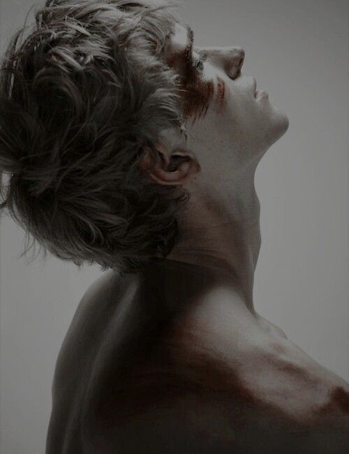
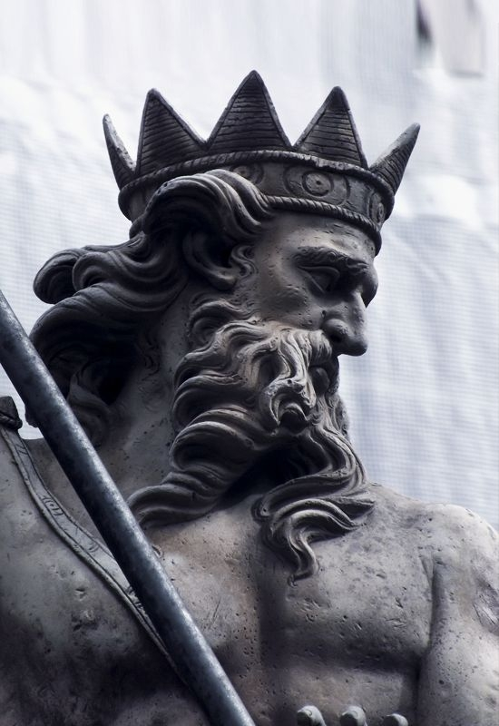

Человечество и Охотники.
Положение людей в мире

Скот, стадо, никчёмное большинство, корм и серая масса — всё это эвфемизмы, которые применяют сильные мира сего к людям. Все заметили, что среди них нет ни одного положительного слова, как к Вампирам, Магам и Оборотням, каждый из которых либо манипулирует человечеством, либо пренебрегает к ним какими-то высокими отношениями. А всё потому, что человечество в мире «Кровавого Тропа» не играло, не играет и не заиграет никогда на первый ролях. Именно так и представлены люди с самого начала, прямо в лоб. Даже своего рода «Инквизиция», прославленная как единственный силовой способ бороться с нечистью — лишь инструмент Вампиров и Магов, которые истребляли друг друга людскими ручками и чаще всего в войне против людей гибли молодые вампиры и щенки, которых было выгодно показательно сдать инквизиции, дабы те поверили в свою возможность влиять на судьбы и жизни Господ.
Можно разглагольствовать о том, что люди прославлены своим умением драться за жизнь даже тогда, когда суждено умереть , даже когда жить невыносимо и больно, но вот что это даёт человечеству? Ничего. Они давно проиграли в этой битве, в которую даже не вступали. Люди никогда не смогут заполучить силу самостоятельно, а если даже заполучат — они больше не будут являться частью человечества. Вампир получает становление от другого вампира. Оборотень рождается под луной по воле Ведуна и Матери-Природы Маги избраны осколками.
Все перечисленные являются бывшими людьми. В мире «Кровавого Тропа», жестоком и эгоистичном, такое абстрактное понятие как «общее благо» практически отсутствует, из-за чего любой представитель чудовищ ценит прежде всего своё окружение: вампир — свой клан и секту, оборотень — свою стаю и святыню, маг — себя и воплощение магии.
Всё это сдабривается тем, что люди во всех сверхъестественных существах будут видеть неотвратимую угрозу и врагов, даже будь они на их стороне. Вампиры и оборотни так или иначе кровожадные хищники, которые пытаются сладить со своим зверем внутри, перманентно представляющий угрозу для людей.
В любом случае — Вам не воспрещается играть за этих несчастных, которые могут увидеть свет в конце тоннеля лишь по велению своих незримых хозяев. Может быть, вы хотите прожить жизнь, не ведая ничего, что находится за занавесом. Весьма возможно, что вы рассчитываете быть будущей жертвой вампира, кандидатом на вступление в прайд оборотней. А быть может, несмотря на всё отношение сучьей судьбы, которая так и норовит обрести людей на очередной рок, вы примкнёте к отчаянным боевикам, дерущихся не за победу, не за человечество, а чтобы стать худшим кошмаром для нечисти?
Быть может, они нас победили, но никто не запрещает уйти на своих правилах.
Фракция Людей: «Висельники»

Введение
После объятия вампира, укуса оборотня или постижения судьбы быть избранным для осколка — легко потерять голову и возненавидеть всё общество смертных, считая их насекомыми. Но всё же, старейшие вампиры и даже те, кто прожил одну сотню лет знают, насколько могут быть порой опасны люди. Порой, они могут представлять опасность куда более существенную, чем крыса, загнанная в угол. В эпоху фосфорных бомб, ядерного оружия, напалмовых бомбардировок важно сохранять «Лицедейство», так как в противном случае общество Сородичей будет обречено на истребление. Численное преимущество — громкий, банальный и грубый аргумент, но действенный.
Как пример, общество Сородичей в период Восстания Неонатов было близко к разрушению «Лицедейства» как никогда раньше. Об их обширном существовании догадались кардиналы оккультных орденов, чей час пробил и чья секретная служба должна была начаться вот-вот, но как оказалось, они не смогли оказать сопротивления никому без направляющей руки вампира. Это ни капли не остановило никого, так как в «Инквизиции», как принято было называть общество охотников, полна фанатиков, чьи умы затуманены ошибочным мнением, что за смерть в рвении истребить сверхъестественное им уготовано местечко в раю. Мотивы и формы охотников менялись, а цель оставалась — убить всё, что выбивается из привычной картины мира.
Охотников без преувеличения много, они богаты на фракции и формы, у каждых свой метод изгнания нечисти из этого мира. Но если их много, то почему никто о них не расскажет, ибо имеются настоящие доказательства? Охотники вынуждены блести своё «Лицедейство» по одной простой причине — они все воюют за человечество и огласка существования сверхъестественного будет смертным приговором как для вампиров, оборотней и магов, но и для людей. Они победят, но какой ценой? Котерии Вампиров будут уничтожать города, миллиардами кидая в огни войны людские тела, пока сами в них не сгорят. Оборотни объединятся в единый прайд и обрушат на цивилизацию всю силу природы, над которой изгалялись люди с самого начала своего существования. Магов убьют, но перед этим они погрузят под воду целые континенты. Эта победа способна разбить человечество, загнать их назад в прогрессе и погубить, ибо когда все сверхъестественное умрёт, предоставленные сами себе люди начнут убивать друг друга за ресурсы и остатки власти. Охотники намеренно отслеживают людей, которые пострадали от чудовищ, чтобы пресечь попытку рассказать об этом и по возможности завербовать новичка к себе в отряд.
Нынешняя церковь отрицает любые формы «Инквизиции» и сама не знает о её существовании. Смертные обмануты суевериями и наукой. Они неспособны замечать вампиров и оборотней среди подобных, а если же им и удаётся о них узнать — они стремятся попасть на Кровавый Троп этого мира. Есть и те, кто знает и дрожит от страха, но не может с этим смириться и выходит на охоту.
Облики организации
«Инквизиция» — исчезнувший на выгоревшей ленте дней анахронизм, который уже не употребляется даже самими охотниками ввиду уникальности каждой общности этих безрассудных борцов с тьмой, дерущихся не из-за веры. В каждой стране есть своё укоренившееся войско борцов, со своим оружием, методами, взглядами и т.д.
Примером могут служить «Соколиные Черепа» из холодных лесов Сибири и дальнего востока России. Происходящие из старой византийской гвардии, которая должна была охранять границы от мусульман, эта организация претерпела последнее своё изменение после Второй Мировой войны, после оставаясь партизанами, использующие традиционные методы охоты в выслеживании вампиров или другой нечисти, стреляющие из Винтовок Мосина и кидающиеся коктейлями Молотова. Их деятельность на данный момент направлена на истребление вампиров клана «Уроборос», которые были изгнаны с западной России после пришествия туда других вампирских кланов.
Как ещё один пример — Итальянские «Легионеры Смерти», одевающиеся в броню, схожую с доспехами реальных легионеров времён Римской Империи. Вместо кольев для парализации вампиров они используют мечи гладиусы.
И конечно же охотники Британии — «Висельники». Названы они так из-за того, что у многих охотников этой фракции схожие взгляды в причинах уничтожении нечисти. Висельники считают, что война давно проиграна, мир теперь навсегда будет в руках кровососов и псин-переростков, а глобальные попытки изменить это кинут человечество в ещё более глубокую яму. Они решают стать худшим кошмаром для всех них, самыми яростными врагами, самыми отчаянными борцами с нежитью, которые заставят их молить о пощаде, но они будут глухи к мольбам. Они упиваются жестокостью, предвкушают последнюю свою резню, будут смеяться даже тогда, когда их вырванное из груди сердце находится в руке монстра. Они знают, что не умрут в своей постели, что дома их никто не ждёт. Так что каждый из них готов отдать Богу душу в любой момент бессмысленной борьбы.
Облик Висельников заключаются в двух крайностях, ибо это панки с формой ордена рыцарского стола.
Быть Висельником — это использовать как броню горжет и кольчугу, которую ты носишь под рваным пуховиком или усыпанной заплатками косухой. Быть Висельником — носить с собой заряженный зажигательными патронами помповый дробовик с длинным штыком и под громкое «Oi!» идти в штыковую на кровососа. Быть Висельником — это ирокез с облезлой краской, который ты укрываешь дырявым шлемом с забралом и носишь на ногах тяжелые сапоги, неумело пародирующие сабатоны.
Вызывающе одетые, потерявшие всякую надежду, они ведомы чувством резни и гнева учиняют в глазах монстров страх. Ведь как может жалкое существо, как человек превращать в месиво голову молодого вампира одними только ударами приклада? Они укрываются в старой церкви за чертой Лондона, спят под открытым небом, а ресурсы они добывают где только могут: работают на бандитов, получают деньги от неравнодушных и неизвестных господ, крадут из заначки убитой ими твари.
У них много разбросанных по Лондону штабов, а все Висельники разбиты на отряды, где главный зовётся «Паладином» , а все другие из его отряда — «Рыцари». Отряд может самостоятельно ставить себе цели и организовывать операции. Висельники редко напрямую убивают Вампиров, так как они хорошо скрываются, но даже если и встречают — это огромное испытание для отряда Висельников. Чаще всего им попадаются неопытные молодые вампиры, желающие проверить, на что они способны в бою и дурно упоминаемые «Висельники» являются лучшей целью под его способности. Вот только одурманенный новообретенной силой вампир не знает, что его могут убить, что и случается чаще всего по неопытности. Более опытные вампиры предпочитают избегать этих рыцарей-панков, предпочитая не тратить на них время и лишний раз подставлять «Лицедейство» под угрозу. Более распространенный вид операций у Висельников — уничтожение имущества и пошатывание Империи тех же вампиров. Они убивают их упырей, выслеживают вампиров со слабой кровью, сжигают их материальные активы в банках, нападают на офисы, компании которых принадлежат Вампирам-бизнесменам и т.д.
Но единственное чудо всё же у Охотников есть и это «Слёзы Ангела»:
Слезы Ангела — после смерти Ангела, который пал от меча Валаама, Яхве увековечил его дух в нескольких десятках статуй, которые он ниспослал в святыни людей. Вампиры, которые управляли Католической церковью видели, как ангел плачет, а употребив эти слёзы внутрь, вампир чувствовал, как его кожу пронзают мнимые иглы, не нанося никакого урона. После этого эти Статуи пытались уничтожить, но каждый удар по статуе был способен сломать Вампиру кости от отдачи, или вовсе рука кровососа выжигалась, словно на солнце.
Вернули эти статуи во время Восстания Неонатов, когда отряд Инквизиции выходил на разведку и обнаружил в катакомбах одной и церквей одну такую статую, которая всё ещё плакала. Набрав в ладонь этих слёз, инквизитор употребил их и почувствовал небывалый прилив сил, бодрость и эйфорию. Когда эти же слёзы пытались дать смертельно раненному, но ещё живому Инквизитору, все его травмы моментально исчезали, он был идеально здоров и вновь готов продолжить бой. Слёзы излечивали любые нанесенные в бою раны. Если же дать этих слёз слишком много, то внутренние органы превращаются в серебро. Таким образом, Яхве мог сказать, что не стоит пытаться злоупотребить божественной силой, как это сделали вампиры.
Известно, что нормальная доза «Слёз Ангела» — 5 капель в день. Каплей больше — эта капля превратит внутренние органы в серебро. Существуют и побочные эффекты в виде того, что послевкусие у еды сильно отзывается серебром, а у всех, кто употребляет эти Слёзы длительно из ниоткуда появляется длинный шрам, идущий по торсу слева-направо наискось, ведь именно такую рваную рану нанёс Валаам ангелу. Хранить капли можно только в серебряных сосудах, которые охотники носят на шейной подвеске, ибо в любых других сосудах капли быстро испаряются. В каждой базе Охотников есть статуя Ангела, с помощью которых они пополняют свой запас слёз перед вылазкой.